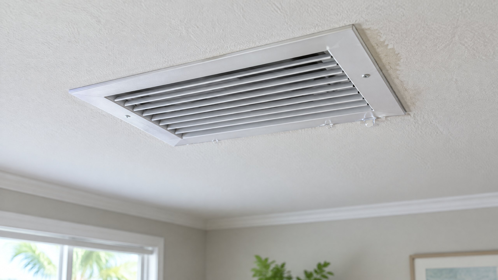

A ceiling register should deliver conditioned air, not water onto your floor. The first useful distinction is whether moisture is forming on the cold grille or reaching it from somewhere above. Both deserve attention, but they can require different repairs. Calling every drip a clogged drain can miss the actual water path.
For a Tampa or North Tampa home, warm, humid air around a cold surface can contribute to condensation. That context explains one possibility; it does not prove that weather is the whole explanation. An inspection may also need to consider the ducts, indoor equipment, drainage, and unrelated building leaks.
Is water at an AC ceiling vent normal condensation?
Water forming at the indoor cooling coil is normal; water dripping from a ceiling register is not the intended drainage path. Lennox describes the usual sequence: indoor air passes over the cold evaporator coil, moisture condenses, and that water exits through the condensate drain. The supply ducts deliver the cooled air, not a designed stream of condensate.[1]
A cold metal grille can collect surface moisture when it encounters humid air. Lennox also identifies duct insulation, air leakage, and high indoor humidity as possible contributors. Water can instead arrive from a drain overflow or another wet component above the ceiling. The appearance of the grille alone does not distinguish those situations.[1]
What should you do when the vent is actively dripping?
If cooling is associated with ongoing dripping, turn cooling off using the normal thermostat control if it is accessible without approaching wet electrical equipment. Keep people and belongings away from the affected area. Do not stand beneath a sagging ceiling, touch wet light fixtures, or open an electrical or HVAC cabinet to investigate.
Arrange prompt assessment rather than repeatedly restarting cooling to see whether it happens again. Lennox advises professional help for active leaks, water damage, and dripping that persists. EPA emphasizes correcting the water problem and responding promptly to wet materials; simply drying a visible spot does not resolve an ongoing source.[1][2]
If water is near electrical equipment or the ceiling is visibly deteriorating, seek urgent qualified help for that condition as well as the HVAC assessment. There is no instruction here to access wiring, reset a protective switch, or handle a saturated ceiling. An AC service visit also does not automatically include building restoration.
What can you observe without removing the grille?
From the floor, note whether beads appear mainly on metal, whether the surrounding ceiling is stained, and whether one register or several are affected. Record when dripping starts relative to cooling, showers, cooking, or rain. Take a photograph from an accessible location if you can do so without approaching the wet area.
These are clues to report, not diagnostic tests. A drip during cooling can point the inspection toward HVAC moisture, but does not rule out other water sources. Dripping around rain is useful information for a building assessment, not proof of a roof leak. EPA notes that hidden moisture can occur near pipes, inside ducts, or in roof materials above ceilings.[2]
| Observation | Report this detail | Do not assume |
|---|---|---|
| Beads on the grille | Which surfaces are wet and when it begins | That humidity is the only cause |
| Wet ceiling around the opening | Stain location, spread, or deterioration | That replacing the grille fixes it |
| Dripping plus weaker cooling or ice | The cooling change and visible ice location | That low refrigerant is proven |
| Water during rain or with cooling off | Timing and whether cooling was already stopped | That all the water comes from AC |
Which HVAC conditions should the inspection distinguish?
The professional should trace the water path rather than select a repair from the symptom alone. That can include checking condensate drainage and pans, looking for evidence of icing, and examining the duct connection, insulation, and surrounding air leakage. Lennox lists these as possible moisture routes, not interchangeable diagnoses.[1]
If ice is visible or cooling has weakened, read our separate ice on the AC line explanation. Ice can involve airflow or refrigerant conditions, and does not prove one particular fault. If a recurring drainage problem is identified, our repeat drain-line blockage article addresses that narrower problem.
A confirmed drain obstruction may call for condensate drain cleaning. That service should not be assumed to correct condensation at a poorly insulated connection or an unrelated building leak. Ask the provider what finding connects the proposed work to the actual dripping location.
Why can the duct connection matter in a humid attic?
The connection behind a register is often called a duct boot. PNNL's duct checklist calls for inspecting ducts, sealing connections, sealing boots to finished surfaces, and appropriate insulation in unconditioned spaces. These are professional installation considerations, not instructions to pull down the grille and add foam wherever moisture appears.[3]
If inspection identifies leakage or a damaged connection, discuss the specific duct sealing or duct repair scope. Our ductwork decision guide explains that broader choice. No universal insulation rating, humidity reading, or duct replacement requirement can be diagnosed from a photograph of one wet grille.
Should you wipe, paint, or seal the wet spot?
Removing visible moisture without resolving its source is not a repair. EPA advises fixing the water problem and warns against painting over moldy surfaces. This article does not identify mold from a stain or recommend disturbing suspected growth.[2]
Do not block the register, drill a ceiling drain hole, inject chemicals into a duct, or use an improvised cover to redirect water. Ask what must be inspected and dried, whether another building specialist is needed, and how the corrected condition will be checked before normal operation resumes. Request an AC repair assessment for the equipment side, with the timing and photographs you have already recorded.
Frequently Asked Questions
Can humidity make an AC grille sweat?
Yes. Humid air meeting a cold grille can cause condensation. That is one possible explanation, not proof that the ducts, drain, equipment, and surrounding ceiling have no other moisture problem.
Does a dripping vent always mean the drain line is clogged?
No. Water can form on cold surfaces or reach the opening from above. A professional should trace the water path and distinguish drainage, icing, duct conditions, and possible building leaks before recommending a repair.
Will replacing the ceiling grille stop the dripping?
Not necessarily. A new grille does not correct a blocked drain, hidden leak, or an unaddressed insulation or air-leakage problem. Ask what inspection finding supports any proposed replacement.
Can water continue after I turn cooling off?
It can. Remaining water or melting ice may continue to drain, and unrelated water sources may still be active. Continued dripping does not justify restarting cooling; report the timing and arrange assessment.
Sources
[1] Lennox: Why Is Water Dripping from My AC Vent? Normal condensate routing, possible drainage/icing/duct/humidity contributors, and professional-assessment guidance.
[2] U.S. Environmental Protection Agency: A Brief Guide to Mold, Moisture and Your Home. Correcting water sources, condensation, prompt moisture response, and hidden building moisture.
[3] PNNL Building America Solution Center: Duct Sealing and Insulation. Professional inspection, sealed connections and boots, and insulation in unconditioned spaces.
Editorial Source Review & Publisher
Prepared for On The Way Heating & Air from the manufacturer, federal, and national-laboratory references above. This general explanation is not an inspection of your equipment, identification of mold, or a promise that one repair will resolve every ceiling-water problem.